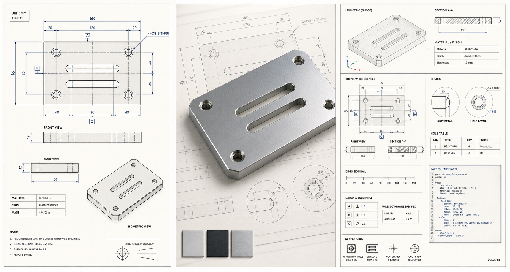

Design Atlas
Instead of explaining every feature with one-off screenshots, Millrect groups what it can make into reusable specimens. Each specimen connects images, capabilities, UI steps, AI/MCP routes, and DSL entry points in one place.
Atlas model
The goal is to show fewer screenshots with more meaning. A specimen ties the finished drawing, 3D output, AI prompt path, and DSL representation together, so documentation can grow by adding scenarios rather than hand-maintained image piles.
Generated Blueprint Visuals
Complex specimens should not depend on app screenshots alone. Millrect uses generated blueprint visuals as the lead image, then keeps UI screenshots as small workflow proof. The first thing a reader sees should be the outcome.

Blueprint Sheet
A lead image with dimensions, holes, slots, sections, and callouts.
Machined Part Hero
A finished-object visual for the home page and atlas.
Technical Spread
A richer format for drawings, material cues, and DSL/MCP explanation.
Real Product Example: Module Joint 1
Real product drawings can also become generated documentation visuals. This example turns a 24 x 100 mm joint plate with 2 mm thickness into a publication-ready blueprint image. The source drawing or DSL remains the dimensional truth; the generated image is used to communicate the outcome.


Specimen cards
Specimen cards are not just screenshots. They are a catalogue of learning objects that start from the thing a user wants to make.
Live Specimen
Parameterized behavior is easier to understand when it moves. Drag the handles on the drawings and the 2D drawing, dimensioned isometric, and Part DSL update together. The hole layout stays fixed at 2×2, so this specimen focuses on dimensions rather than adding holes.
Image system
| Image tier | Purpose | When to update |
|---|---|---|
| Showcase | Finished result images for the home page and atlas | Only when a specimen's visual story changes |
| Scenario capture | Drawings and 3D generated from a repeatable specimen ID | Regenerate only the affected scenario |
| UI proof | Small images that point to buttons, panels, or dialogs | Only when UI names or placement change |
Before adding a new screenshot, check whether it belongs to an existing specimen card. If a new specimen is needed, choose the scenario ID before the image filename. Details live in Documentation System and Blueprint Specimens.